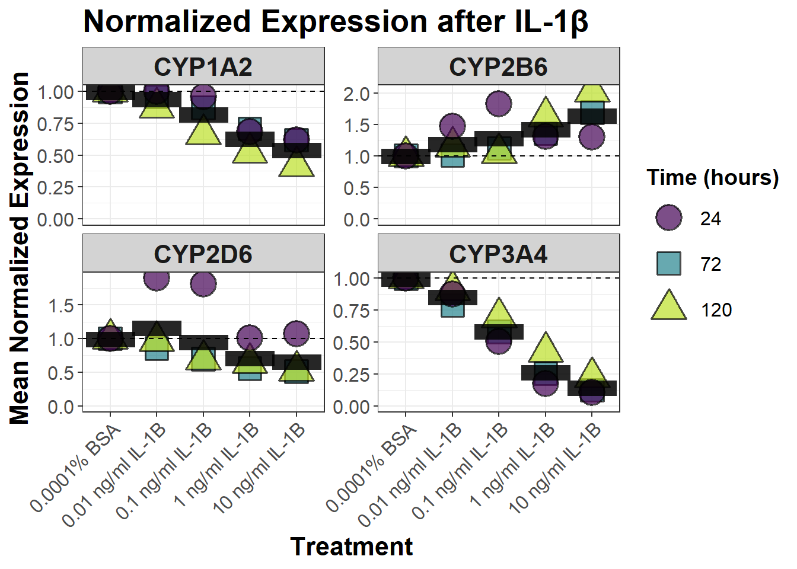
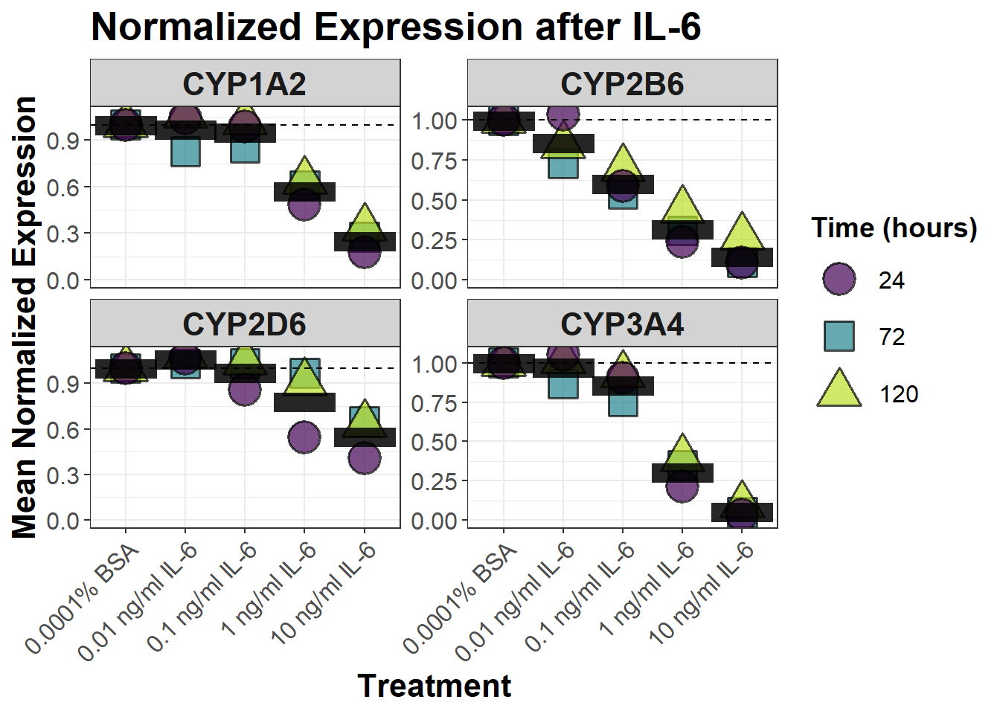

library(here)
library(data.table)
library(ggplot2)
library(patchwork)
library(RColorBrewer)
library(viridis)
source(here("notebooks/qPCR/custom_functions.R"))mRNA plots
THIS IS THE LATEST EDITION WITH THE FINAL PLOTS. Supplemental plots may be in one of the other qPCR/*.qmd files
All data cleaning, tidying and wrangling was done before the start of this quarto manuscript project. Code is in: C:/Users/alosvendsen/OneDrive - Syddansk Universitet/PhD/R_code/manuscript_1 And copied to this project: /notebooks/qPCR/old_qPCR_import
Donor 1: timepoints = 72 and 120 hours Donor 2: timepoints = 24, 72, and 120 hours Donor 2: timepoints = 24, 72, and 120 hours
Setup
Finalize the data and save the data table
Just done once, and commented out hereafter.
Load data, remove 0.001 ng/ml cytokine concentrations, calculate means for each experiment.
Already done. Commented out. Final plot data i ./data_final_for_plotting/
#### Load data, filter data and calculate geometric means
# data <- readRDS(here("notebooks/qPCR/data_processed/final_dataframe.rds"))
#
# # Remove the lowest concentrations of cytokines, since not used in all
# # Experiments. Note 24 hour time points was only used in one experiment
# plot_data <- data[!treatment %chin% c("0.001 ng/ml IL-1B", "0.001 ng/ml IL-6")]
#
#
# # Calculate the mean expression grouped by experiment, condition, treatment, and time.
# # USE GEOMETRIC MEAN when averaging normalized expression (RQ) values, since they are on a multiplicative scale.
# plot_data[,
# bio_group_mean_expression := geometric_mean(normalized_expression),
# by = .(experiment, condition, treatment, time, target)
# ]
#
# # Save the data
# saveRDS(plot_data, here("notebooks/qPCR/data_final_for_plotting/plot_data.rds"))# rmv <- ls()[!grepl(x =ls(), pattern = "geometric")]
#
# rm(list = rmv)Main plot
Remember too use geometric mean when on a multiplicative scale (such as when handling RQ/fold data!)
# Load the data
plot_data <- readRDS(
here("notebooks/qPCR/data_final_for_plotting/plot_data.rds")
)
# Filter for CYP enzymes only, include all treatments and CYPs
cyp_data <- plot_data[target %like% "CYP"]
# Split data based on treatment condition
cyp_data_IL6 <- cyp_data[condition == "IL-6"]
cyp_data_IL1B <- cyp_data[condition == "IL-1B"]
# calc_means <- function(cyp_data) {
# cyp_data[,
# .(mean_normalized_expression = geometric_mean(normalized_expression)),
# by = .(time, treatment, target)
# ]
# }
# calc_means(cyp_data_IL6)
# Create plot function. Takes data, and condition arguments.
create_plot_with_time_grouping <- function(cyp_data, condition) {
# Calculate mean normalized expression for each combination of:
# CYP enzyme, treatment and time
cyp_means <-
cyp_data[,
.(
mean_normalized_expression =
geometric_mean(normalized_expression)
),
by = .(time, treatment, target)
]
# Calculate the overall mean across time points
cyp_overall_means <-
cyp_means[,
.(
overall_mean_normalized_expression =
geometric_mean(mean_normalized_expression)
),
by = .(treatment, target)
]
# Create and return the plot
ggplot() +
# Plot mean of each timepoint
geom_point(
data = cyp_means,
aes(
x = treatment,
y = mean_normalized_expression,
fill = factor(time),
shape = factor(time)
),
alpha = 0.7,
size = 7,
stroke = 1,
color = "black"
) +
# Plot overall mean
geom_point(
data = cyp_overall_means,
aes(
x = treatment,
y = overall_mean_normalized_expression
),
color = "black",
size = 40,
shape = 45, # Black horizontal rectangle for overall mean
alpha = 0.85
) +
geom_hline(yintercept = 1, linetype = "dashed") +
scale_y_continuous(limits = c(0, NA)) +
# Modify shape to include the overall mean
scale_shape_manual(
values = c(21, 22, 24, 45), # Circle, Triangle, Square, Horizontal Rectangle
labels = c("24", "72", "120", "Overall Mean") # Add "Overall Mean" label
) +
scale_fill_viridis(discrete = TRUE, option = "viridis", begin = 0, end = .9) + # Using viridis color scale
facet_wrap(~target, scales = "free_y", ncol = 2) +
labs(
x = "Treatment", y = "Mean Normalized Expression",
title = paste("Normalized Expression after", condition),
fill = "Time (hours)",
shape = "Time (hours)" # Shared label for timepoints and overall mean
) +
theme_bw() +
theme(
text = element_text(size = 14), # Base font size
axis.text = element_text(size = 12),
axis.title = element_text(size = 16, face = "bold"),
axis.text.x = element_text(angle = 45, hjust = 1),
plot.title = element_text(size = 20, face = "bold"),
legend.title = element_text(size = 14, face = "bold"),
legend.text = element_text(size = 12),
legend.key.size = unit(2, "lines"), # Increase size of keys in the legend
legend.spacing = unit(0.8, "cm"), # Increase spacing between legend items
strip.background = element_rect(fill = "lightgrey"),
strip.text = element_text(size = 16, face = "bold")
)
}
# Create the plots
plot_IL6 <- create_plot_with_time_grouping(cyp_data_IL6, "IL-6")
plot_IL1B <- create_plot_with_time_grouping(cyp_data_IL1B, "IL-1β")
plot_IL1B
plot_IL6
# Save the plots
# ggsave(
# filename = "images/mRNA/plots/main_normalized_Expression_IL6.png",
# plot = plot_IL6,
# device = "png",
# width = 12,
# height = 10,
# dpi = "retina"
# )
# ggsave(
# filename = "images/mRNA/plots/main_normalized_Expression_IL1B.png",
# plot = plot_IL1B,
# device = "png",
# width = 12,
# height = 10,
# dpi = "retina"
# )